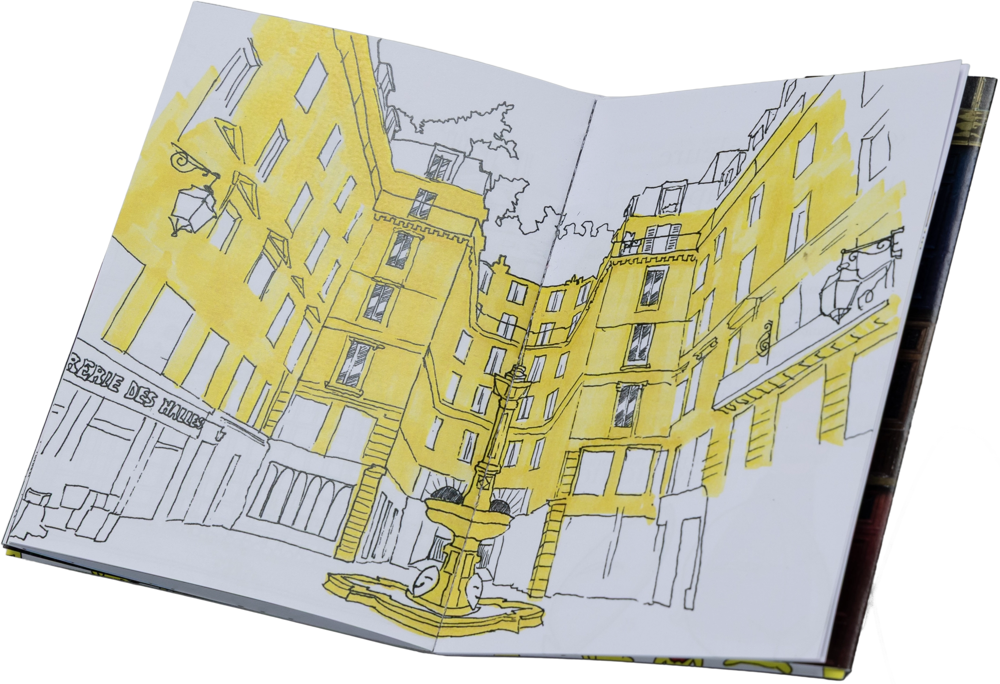

Hinter verschlossenen Türen
Layout, Illustration, 2025
Ouvre Toi nimmt die Leserinnen und Leser mit auf eine Reise durch verborgene Orte, unerwartete Begegnungen und persönliche Geschichten in Paris. Begleitet von einer geheimnisvollen Figur – der eigenen Neugier – führt der Weg durch Türen, Treppen und versteckte Innenhöfe. Dabei begegnen sich unterschiedliche Menschen, Lebensrealitäten und Gedanken. Die Erzählung lädt dazu ein, gewohnte Wege zu verlassen, genauer hinzusehen und die verborgenen Geschichten zu entdecken, die im Alltag oft unbemerkt bleiben.
